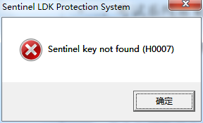
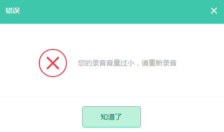

账号问题
-
学校管理员账号获取
在系统第一次安装激活时，会出现创建管理员的对话框提示框，按提示创建，一个学校有且只有一个管理员账号，如图所示。
-
教师账号创建
教师可先向学校管理员索要账号注册邀请码，再打开浏览器，登录悠悠考拉网（www.uukaola.com）,点击【注册】，选择【我是教师】，开始账号信息的输入，支持【手机号码】和【邮箱】两种方式账号注册,如图
-
学生账号创建
先打开浏览器，登录悠悠考拉网（www.uukaola.com）,点击【注 册】，选择【我是学生】，开始账号信息的输入，支持【手机号码】和【邮箱】两种方式账号注册。如图
-
学生账号绑定班级
学生先从教师处获取【班级编码】，再登录学生账号，点击【绑定班级】，开始输入【班级编号】、【学号】、【姓名】，如图
-
教师账号密码找回
教师的账号和密码如果遗忘，可联系学校管理员；具体操作：登录管理员账号，点击【教师管理】，选中忘记密码的账号进行【密码重置】，如图
-
学生账号密码找回
学生账号密码如果遗忘，可联系班级老师，进行密码重置； 具体操作：教师登录账号，选择【班级管理】，点击【学生管理】，选中忘记密码的学生，进行【修改】，如图
再进行学生账号的密码【重置】，输入新密码，确认后，点击【修改】，如图
-
教师在机房登录教师机提示“输入的用户名或密码有误”
①先确认登录账号是否为教师个人账号，而不是管理员账号；
②若密码遗忘，可联系学校管理员进行密码重置
系统常见提示错误问题
-
打开教师机提示“Sentinel key not found(H0007)”
【错误提示如图】  【原因分析】
①打开教师机时，绿色加密狗没有插入；
②加密狗插入后，红灯未亮，电脑没有识别；
③加密狗损坏；
【解决办法】
①在教师机电脑上插上绿色加密狗；
②重插加密狗，直至红灯亮，可尝试更换USB插口；
③联系售后技术人员确认加密狗是否损坏。
-
打开教师机提示“System time has been altered(H0045)”
【错误提示如图】 【原因分析】
教师机当前的系统时间有误；
【解决办法】校正教师机系统时间，再电脑重启，启动教师机。
-
学生机网络状态一直显示连接失败
【错误提示如图】
 【解决办法】
【解决办法】
①点击学生机右上角“教师机连接设置”，将ip地址设置为教师机实际ip地址，如下图
②检查学生机与教师机间局域网的连通与否；可以检查交换机是否故障；是否网线脱落等，学生机跟教师机网络连通后,学生机方能与教师机连接成功。
-
系统提示“系统检测到您的耳机/麦无法正常工作，请立即检查”
【错误提示如图】 【原因分析】
①学生机耳机未插入；
②耳机插入后，系统未识别。
【解决方法】
①在学生机上插入耳机；
②打开系统声音管理器，确认插入耳机已识别。如图
-
设备检测时弹出“播放音频文件失败”
①检查学生机是否有插入耳机，若没有，请先插入耳机，再重新启动学生机。
②安装“背景音频不能正常播放补丁包”（见光盘内），使用办法：直接拷贝文件到学生机“~\英语听说考试模拟训练系统-学生机\”目录下，替换原文件。
-
设备检测时，系统提示“您的录音音量过小，请重新录音”
【错误提示如图】

【解决方法】
① 将电脑系统声音调高，如图:
②学生朗读的声音音波要超过阀值，如图:
-
点击【清晰】提示“评分引擎检测失败，请换台学生机使用”
【错误提示如图】
【原因分析】
①Ailas没有启动，在任务栏中未找到Ailas；
②学生机未连接到教师端的评分服务Ailas，Users数量为0，如图
③Ailas本身注册失败，如图
④查看学生机的机器配置，配置较低的，在初始化引擎时速度较慢，试音完成后仍然没有初始化完成；
⑤学生机的系统时间与当前时间不符；
⑥其他原因，学生机不是以系统管理员权限运行，不能向系统写文件。
【解决方式】
①在教师机端检查Ailas的运行状态，Ailas未启动，启动程序可能被误杀，需在杀毒软件病毒隔离区找回ailas_for_dog.exe评分服务，并设置杀毒软件信任；若无法找回，需重新安装，并并设置杀毒软件信任
②在教师机端检查Ailas的运行状态，若启动没有Users连接数，查看机房的网络互通性，关闭防火墙和杀毒软件。
③在教师机端检查Ailas的运行状态，Ailas启动未注册，检查当前教师机的网络状态，确认是否联网；
④配置较低的机器，初始化时间较长，学生在检测完后，可等待，也可重启学生端，重新登录测试；
⑤校正学生机系统时间；
⑥右键点击学生机快捷方式，选择属性，找到兼容性标签页，勾选以管理员权限运行。
-
练习模式下，提示“评分失败，请重新录音”
【错误提示如图】
【解决方式】多次尝试录音评分，若继续出现，可将C:\Program Files (x86)\英语听说考试模拟训练系统-学生机\Logs\~下的log文件进行反馈，也可右击“我的电脑”，查看“属性”，将机房配置一起反馈
-
在安装过程中，ailas_for_dog.exe程序被杀毒软件查杀了
可将教师机安装目录添加到杀毒软件的信任区，以360为例，如下图，先选中【木马查杀】,点击【信任区】，【添加信任目录】，选择教师机安装目录。
考试/练习中异常处理
-
考试时学生座位号输入错误
教师可以在教师机的考试监考管理界面右键点击该考生，点击【修改座位号】，再输入新的座位号，如图:

-
学生机在考试过程中发生异常
教师可以在教师机的考试监考管理界面右键点击该考生，点击【重置登录】，如图:
-
学生考试结束后，答案上传失败
学生考试结束后，答案自动上传失败，教师可点击【结束考试】后，再点击【回收试卷】对上传失败的答案再次回收，如图: